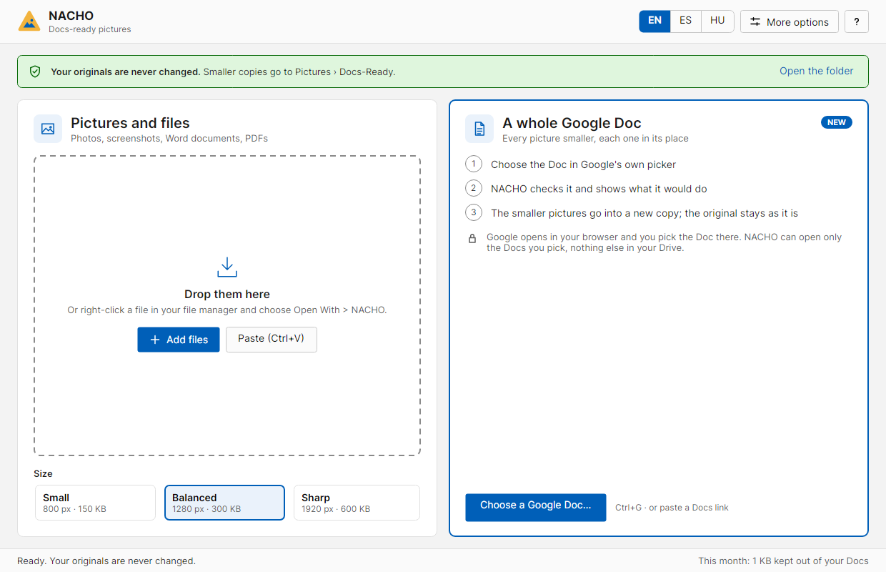
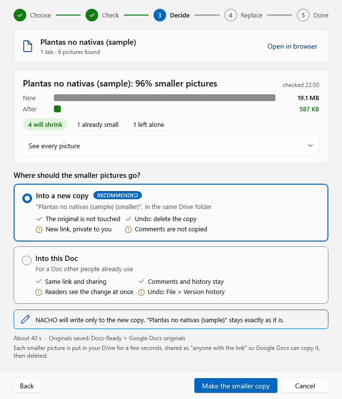
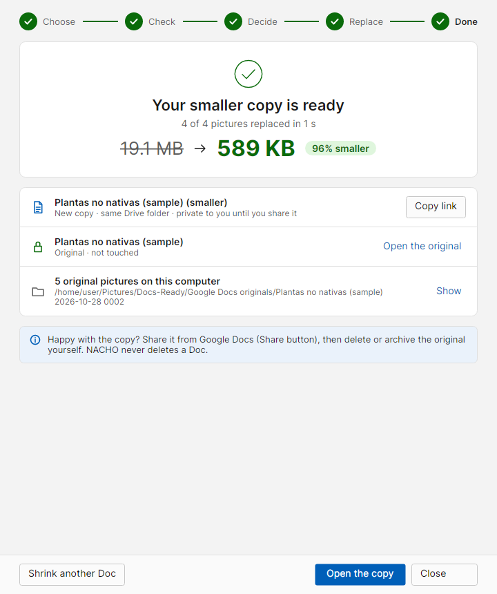
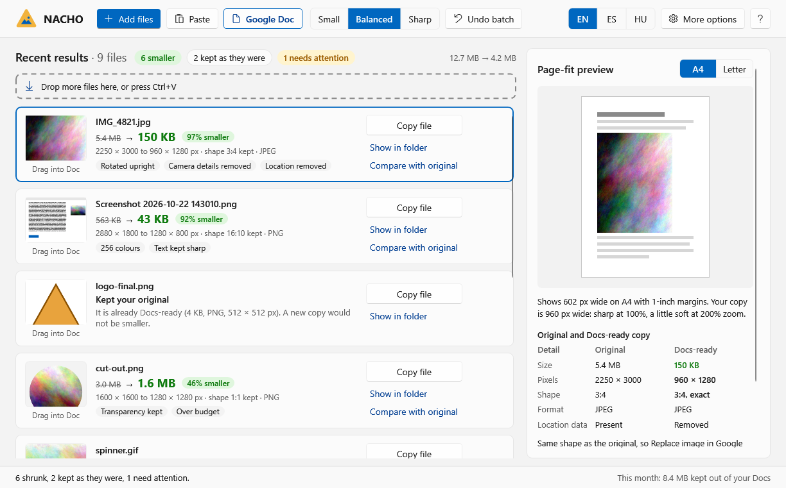

NACHO
Normalise, Adjust, Compress, Hand Over. A free app for Windows and Linux.
Google Docs gets slow when it is full of big photos. NACHO makes pictures smaller so they look the same on the page but take a fraction of the space.
Shrink a whole Google Doc, keep the original safe
Choose a Doc in Google's own file picker. NACHO checks every picture first and shows what it would do. Then, by default, it puts the smaller pictures into a new copy of the Doc, in the same Drive folder, so your original stays exactly as it is. Each picture keeps its place, size and wrapping. If you prefer, NACHO can change the Doc itself instead, keeping its link, comments, sharing and version history.
A real 410-page book with 251 photos went from 524 MB to 39 MB.
How it looks
Screenshots from NACHO's own self-test, with a sample Doc and a test account.




- Single pictures: drop a photo or screenshot on NACHO and it makes a small, Docs-ready copy. Your original file is never changed.
- Word documents and PDFs: every picture inside is shrunk at once.
- English, Spanish and Hungarian.
Download NACHO More screenshots
How NACHO uses your Google account
Only when you use "Shrink a Google Doc". You sign in with Google in your browser and choose the Doc in Google's own file picker. NACHO can then open only the files you choose (and the temporary files it creates itself). It cannot see any other file in your Drive or any other Doc.
The pictures are made smaller on your own computer and put into a copy of the Doc that Google makes in your Drive (or into the Doc itself, if you choose). Nothing is sent anywhere else. Details: privacy policy.